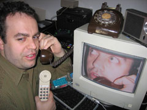

people doing strange things with electricity
The 28098th dorkbot-nyc meeting took place on Wednesday, February 7th, 2007, at 7pm at Location One in SoHo.
It featured the fragrant and marvellous:
free103point9: Transmission Arts
Two of tonight's presenters, 31 Down and Tianna Kennedy, are free103point9 "transmission artists". Tom Roe and Galen Joseph-Hunter will give us a quick intro to free103point9: free103point9 is a non-profit arts organization focused on establishing and cultivating Transmission Arts. This genre includes experimental practices in radio art, video art, light sculpture, and installation and performance utilizing the electromagnetic spectrum. With locations in Upstate and Brooklyn, New York, free103point9 activities support and promote artists exploring transmission frequencies for creative expression. free103point9 programs include public performances and exhibitions, an experimental music series, an online radio station and distribution label, an education initiative, and an artist residency program and study center.
http://www.free103point9.org
31 Down: Pay-Phone Theater
represented by Mirit Tal and Shannon Sindelar 31 Down is a theater company that uses radio and network technologies as the backbone for their storytelling in performances and installations. 31 Down has provided a TRIXBOX server (based on Asterisk) for free103point9: transmission arts. Transmission Artists with free103point9 now have access to an open source PBX for use in their artwork. Mirit Tal and Shannon Sindelar, of 31 Down, will introduce the use of this server in their upcoming theater projects, including the subway pay-phone mystery installation, Canal Street Station, opening this March.
http://www.31down.org
Brad Borevitz: The State of the Union
Lamenting the triumph of iconicity over rhetoricity in political speech, Brad Borevitz created the State of the Union project to consider if evidence for this assertion exists in the language of the the yearly address which stands as a controlled sample over the course of U.S. history. The website provides searchable access to the corpus of all the State of the Union addresses from 1790 to 2007, and uses visualization software which allows a user to explore how specific words gain and lose prominence over time. State of the Union focuses on the relationship between individual addresses as compared to the entire collection of addresses, highlighting what is different about each document. From this information, users are invited to try and understand the connection between politics and language -- between the state we are in, and the language which names it and calls it into being.
http://www.onetwothree.net/
Tianna Kennedy
Tianna's artistic endeavors are collaborative explorations of human/information interaction with an emphasis on the transmission of affect. Though her work often takes shape via sound recording, web-streaming, and radio technologies, her focus inevitably returns to the people involved in the process(es). For her presentation at dorkbot, Tianna will talk about the paradoxical role of nostalgia in the avant-garde of sound technology. Along the way she'll touch on edison's gramophone, Sir Oliver Lodge's Etheric experiments, and her collaborator, Tarikh Korula's own recent archaeoacoustic stylus, which is supposed to retrieve latent ambient historical sound trapped in objects at the moment of their production.
http://www.free103point9.org/artist.php?artistID=10
Here's a printable flyer for the meeting. Thanks, Joel.
Some images from the meeting!
More images from Roberto.